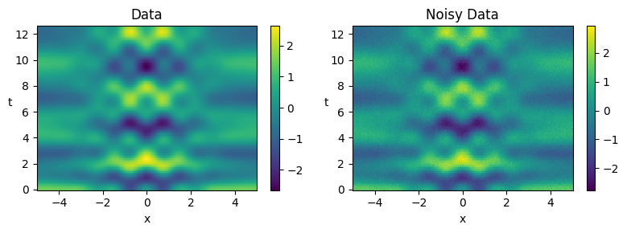
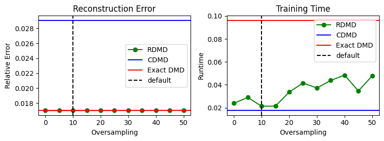
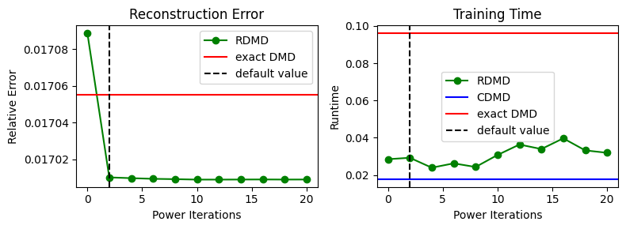
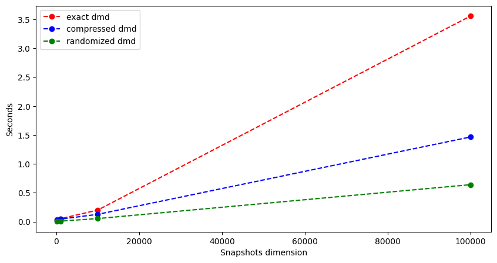

Tutorial 16: Randomized DMD#
In this tutorial, we re-examine the system explored in Tutorial 4 and compare the performance of Compressed DMD (CDMD) and Randomized DMD (RDMD) [1] as means of improving the efficiency of the exact DMD algorithm. We highlight RDMD as an effective alternative to its predecessor CDMD, while also highlighting how one might tune the parameters of RDMD in order to balance accuracy and efficiency.
[1] N. B. Erichson, L. Mathelin, J. N. Kutz, and S. L. Brunton, Randomized dynamic mode decomposition, SIAM J. Appl. Dyn. Syst., 18 (2019), pp. 1867-1891. https://doi.org/10.1137/18M1215013
We begin by importing the RDMD class from the PyDMD package, along with the DMD and CDMD classes for performance comparison. We also import the time module for calculating runtime, numpy for mathematical computations, and matplotlib.pyplot for plotting.
[1]:
import warnings
warnings.filterwarnings("ignore")
import time
import numpy as np
import matplotlib.pyplot as plt
from pydmd import DMD, CDMD, RDMD
We then define a function for calculating relative error, along with a function for computing the CDMD compression matrix used in Tutorial 4.
[2]:
def compute_error(true, est):
"""
Computes and returns relative error.
"""
return np.linalg.norm(true - est) / np.linalg.norm(true)
def build_compression_matrix(snapshots_matrix):
"""
Computes and returns the CDMD compression matrix used in Tutorial 4.
"""
random_matrix = np.random.permutation(
snapshots_matrix.shape[0] * snapshots_matrix.shape[1]
)
random_matrix = random_matrix.reshape(
snapshots_matrix.shape[1], snapshots_matrix.shape[0]
)
compression_matrix = random_matrix / np.linalg.norm(random_matrix)
return compression_matrix
The Toy Data Set#
Now, we re-create the helper function from Tutorial 4 that returns toy data snapshots for a given spatial and temporal resolution. Each data snapshot is the sum of the following three components, with \(x \in [-5, 5]\) and \(t \in [0, 4\pi]\).
\(f_1(x, t) = e^{\frac{-x^2}{5}}\,\cos(4x)\,e^{(2.3i)t}\)
\(f_2(x, t) = \bigg(1-e^{1-\frac{x^2}{6}}\bigg)e^{(1.3i)t}\)
\(f_3(x, t) = \bigg(-\frac{x^2}{50} + 1\bigg)1.1i^{-2t}\)
Here we produce our toy data set for 256 spatial collocation points across 128 time points. We then add Gaussian noise to our data so that we may compare method performance in the presence of measurement noise. The clean data and the noisy data sets are then plotted.
[3]:
def create_dataset(x_dim, t_dim):
"""
Args:
x_dim = resolution along the x range [-5, 5]
t_dim = resolution along the t range [0, 4*pi]
Returns:
x_grid = x collocation points
t_grid = t collocation points
X = (t_dim, x_dim) np.ndarray of snapshot data
"""
# Define the x and t collocation points.
x = np.linspace(-5, 5, x_dim)
t = np.linspace(0, 4 * np.pi, t_dim)
xgrid, tgrid = np.meshgrid(x, t)
# Define the modes that make up each snapshot.
def f1(x, t):
return np.exp(-(x**2) / 5) * np.cos(4 * x) * np.exp(2.3j * t)
def f2(x, t):
return (1 - np.exp(1 - (x**2) / 6)) * np.exp(1.3j * t)
def f3(x, t):
return (1 - ((x**2) / 50)) * (1.1j ** (-2 * t))
# Evaluate modes at each collocation point.
X1 = f1(xgrid, tgrid)
X2 = f2(xgrid, tgrid)
X3 = f3(xgrid, tgrid)
return xgrid, tgrid, (X1 + X2 + X3)
# Generate and visualize the toy dataset.
xgrid, tgrid, X = create_dataset(x_dim=256, t_dim=128)
# Generate noisy data for a given noise magnitude. Seed is used for reproducibility.
noise_mag = 0.1
rng = np.random.default_rng(seed=42)
X_noisy = X + (noise_mag * rng.standard_normal(X.shape))
# Plot both the clean and the noisy data sets.
plt.figure(figsize=(8, 3))
for i, (mat, name) in enumerate(zip([X, X_noisy], ["Data", "Noisy Data"])):
plt.subplot(1, 2, i + 1)
plt.pcolor(xgrid, tgrid, mat.real)
plt.colorbar()
plt.title(name)
plt.xlabel("x")
plt.ylabel("t", rotation=0)
plt.tight_layout()
plt.show()

Exact DMD#
We begin by applying exact DMD to our data so that its results may serve as a benchmark for CDMD and RDMD. Note that throughout this tutorial, we will fit our models to the noisy data set and use our models’ ability to reconstruct the clean signal as a proxy for model accuracy. Furthermore, we record fitting time for all methods in order to compare method efficiency. Here, we replicate the DMD approach used in Tutorial 4.
[4]:
# Define the data matrices to be used for model fitting.
snapshots_matrix = X.T
snapshots_matrix_noisy = X_noisy.T
# Fit a DMD model.
t0 = time.time()
dmd = DMD(svd_rank=3, exact=True)
dmd.fit(snapshots_matrix_noisy)
t1 = time.time()
# Record and print model error and training time.
dmd_error = compute_error(snapshots_matrix, dmd.reconstructed_data)
dmd_time = t1 - t0
print(f"DMD Reconstruction Error: {dmd_error}")
print(f"DMD Training Time: {dmd_time}")
DMD Reconstruction Error: 0.017055067185652258
DMD Training Time: 0.09628486633300781
Compressed DMD#
Now we apply CDMD to our data, where we again compute error and training time when given noisy data. Here, we compute these metrics across multiple trials in order to account for variations that result from randomness. We additionally utilize the compression matrix used in Tutorial 4 for all CDMD models as to replicate the Tutorial 4 approach. We also begin by including the time needed to compute the compression matrix in our CDMD training time.
[5]:
# Define the number of random trials to perform.
num_trials = 200
# Initialize the error and runtime metrics.
cdmd_error = 0.0
cdmd_time = 0.0
for _ in range(num_trials): # Perform multiple trials...
# Fit a CDMD model.
t0 = time.time()
compression_matrix = build_compression_matrix(snapshots_matrix)
cdmd = CDMD(svd_rank=3, compression_matrix=compression_matrix)
cdmd.fit(snapshots_matrix_noisy)
t1 = time.time()
# Incorporate this trial's results into the running averages.
cdmd_error += (
compute_error(snapshots_matrix, cdmd.reconstructed_data) / num_trials
)
cdmd_time += (t1 - t0) / num_trials
# Print average model error and training runtime.
print(f"CDMD (Average) Reconstruction Error: {cdmd_error}")
print(f"CDMD (Average) Training Time: {cdmd_time}")
CDMD (Average) Reconstruction Error: 0.029082042971069595
CDMD (Average) Training Time: 0.017555768489837635
Randomized DMD: Varying Oversampling#
We now examine the performance of RDMD, which is derived in [1] and implemented in the RDMD class of PyDMD.
The performance of the RDMD algorithm is manually toggled by 2 major parameters, one of which is the oversampling parameter, which controls the number of additional random samples (beyond the predicted rank of the data) that are used to compute a basis for the range of the input data. In short, increasing the oversampling increases the probability that one is able to construct a good basis used in RDMD, yet it simultaneously increases runtime due to the usage of a larger random test matrix. It should be noted that in general, a small oversampling value approximately within the range of \([5, 10]\) often suffices [1].
Here, we demonstate how the performance of the RDMD module is impacted by the oversampling parameter, which is 10 by default and can be toggled upon the initialization of an RDMD model. Here, we examine oversampling values within the range \([0, 50]\) and we again fit our RDMD models to noisy data across multiple random trials. We then compare the average error and training time to that of exact DMD and CDMD.
[6]:
# Define the default PyDMD oversampling value.
oversampling_default = 10
# Define the oversampling values to investigate.
oversampling_values = np.arange(0, 51, 5)
# Initialize the error and runtime metrics.
oversampling_error = np.zeros(len(oversampling_values))
oversampling_times = np.zeros(len(oversampling_values))
for i, oversampling in enumerate(oversampling_values):
for _ in range(num_trials): # Perform multiple trials...
# Fit an RDMD model.
t0 = time.time()
rdmd = RDMD(svd_rank=3, oversampling=oversampling).fit(
snapshots_matrix_noisy
)
t1 = time.time()
# Incorporate this trial's results into the running averages.
oversampling_error[i] += (
compute_error(snapshots_matrix, rdmd.reconstructed_data)
/ num_trials
)
oversampling_times[i] += (t1 - t0) / num_trials
We now plot the results of our experiments.
Notice that exact DMD and RDMD tend to be more accurate than CDMD, with RDMD performing considerably well with very little oversampling. Also notice that as expected, the time required to train an RDMD model on average increases as one increases the oversampling parameter. However, as long as the oversampling isn’t too large, an RDMD model can be trained in about the same amount of time as a CDMD model for this particular data set.
[7]:
# Plot experiment results!
plt.figure(figsize=(8, 3))
# Plot error vs. oversampling.
plt.subplot(1, 2, 1)
plt.plot(oversampling_values, oversampling_error, "-o", c="g", label="RDMD")
plt.axhline(y=cdmd_error, c="b", label="CDMD")
plt.axhline(y=dmd_error, c="r", label="Exact DMD")
plt.axvline(x=oversampling_default, ls="--", c="k", label="default")
plt.title("Reconstruction Error")
plt.xlabel("Oversampling")
plt.ylabel("Relative Error")
plt.legend()
# Plot runtime vs. oversampling.
plt.subplot(1, 2, 2)
plt.plot(oversampling_values, oversampling_times, "-o", c="g", label="RDMD")
plt.axhline(y=cdmd_time, c="b", label="CDMD")
plt.axhline(y=dmd_time, c="r", label="Exact DMD")
plt.axvline(x=oversampling_default, ls="--", c="k", label="default")
plt.title("Training Time")
plt.xlabel("Oversampling")
plt.ylabel("Runtime")
plt.legend()
plt.tight_layout()
plt.show()

Randomized DMD: Varying Power Iterations#
Another major RDMD parameter is the number of power iterations used during the randomized QB decomposition process. The use of power iterations is a data preprocessing step that promotes faster singular value decay and hence promotes better basis approximations. Thus similar to the oversampling parameter, increasing the number of power iterations tends to lead to increased accuracy with the drawback of increased runtime due to the need to pass through the data at each power iteration. In general, as little as \(1\) or \(2\) power iterations often suffice [1].
The number of power iterations used may also be toggled upon the initialization of an RDMD model via the power_iters argument, which is 2 by default. Here, we run through the same RDMD experiments as before, only this time we examine power iteration values within the range \([0, 20]\).
[8]:
# Define the default PyDMD power_iter value.
power_iter_default = 2
# Define the power iteration values to investigate.
power_iter_values = np.arange(0, 21, 2)
# Initialize the error and runtime metrics.
power_iter_error = np.zeros(len(power_iter_values))
power_iter_times = np.zeros(len(power_iter_values))
for i, power_iters in enumerate(power_iter_values):
for _ in range(num_trials): # Perform multiple trials...
# Fit an RDMD model.
t0 = time.time()
rdmd = RDMD(svd_rank=3, power_iters=power_iters).fit(
snapshots_matrix_noisy
)
t1 = time.time()
# Incorporate this trial's results into the running averages.
power_iter_error[i] += (
compute_error(snapshots_matrix, rdmd.reconstructed_data)
/ num_trials
)
power_iter_times[i] += (t1 - t0) / num_trials
As expected, we observe that the time required to train an RDMD model tends to increase as one increases the power iterations. Yet again, as long as this parameter isn’t too large, an RDMD model can on average be trained in less time than an exact DMD model, and in about the same amount of time as a CDMD model for this particular data set. However this time, notice that on average, introducing as little as 2 power iterations results in a noticeable improvement in RDMD accuracy. Here, we omit the CDMD error so that we can better observe this phenomenon.
[9]:
# Plot experiment results!
plt.figure(figsize=(8, 3))
# Plot error vs. power iterations.
plt.subplot(1, 2, 1)
plt.plot(power_iter_values, power_iter_error, "-o", c="g", label="RDMD")
# plt.axhline(y=cdmd_error, c="b", label="CDMD")
plt.axhline(y=dmd_error, c="r", label="exact DMD")
plt.axvline(x=power_iter_default, ls="--", c="k", label="default value")
plt.title("Reconstruction Error")
plt.xlabel("Power Iterations")
plt.ylabel("Relative Error")
plt.legend()
# Plot runtime vs. oversampling.
plt.subplot(1, 2, 2)
plt.plot(power_iter_values, power_iter_times, "-o", c="g", label="RDMD")
plt.axhline(y=cdmd_time, c="b", label="CDMD")
plt.axhline(y=dmd_time, c="r", label="exact DMD")
plt.axvline(x=power_iter_default, ls="--", c="k", label="default value")
plt.title("Training Time")
plt.xlabel("Power Iterations")
plt.ylabel("Runtime")
plt.legend()
plt.tight_layout()
plt.show()

Runtime Comparison#
So far, we’ve seen that RDMD tends to be computationally efficient like CDMD, and that the method tends to be more accurate than CDMD in the presence of noise. However, we have yet to observe another major advantage of RDMD over CDMD, which is that when performing data compression, RDMD relies more upon the intrinsic rank of the data, whereas CDMD relies more upon the dimension of the provided snapshots [1]. As a result, RDMD is able to achive high-accuracy results with much smaller compression matrices than CDMD, hence leading to faster runtimes for very high-dimensional data sets.
We demonstrate this by replicating the final runtime experiment performed in Tutorial 4, where we compare the runtime of exact DMD, CDMD, and RDMD as one increases the dimension of the input data snapshots. This time, we do not count the time required to build compression matrices as a part of the training runtime in accordance with Tutorial 4. Notice that our compression DMD methods are more computationally efficient than exact DMD, with RDMD surpassing CDMD in terms of efficiency for larger data sets.
Here, we also demonstrate the usage of the test_matrix parameter of the RDMD module, which allows users to pass a custom random test matrix to the RDMD model. By default, RDMD uses a random test matrix \(\Omega \in \mathbb{R}^{m \times l}\) drawn from a normal Gaussian distribution, where \(m\) denotes the number of data snapshots and \(l\) denotes the target rank + oversampling. However, one may seek to pre-compute their test matrix as demonstrated below, that or use
alternative test matrices such as the subsampled randomized Hadamard transform for improved efficiency [1].
[10]:
# Runtime storage.
time_dmd = []
time_cdmd = []
time_rdmd = []
# Define the data parameters to investigate.
niter = 4
t_dim = 100
xdims = 10 ** np.arange(2, 2 + niter)
for x_dim in xdims:
# Build a data matrix using the current x resolution.
snapshots_matrix = create_dataset(x_dim, t_dim)[-1].T
# Build compression matrix for CDMD.
compression_matrix = build_compression_matrix(snapshots_matrix)
# Build random matrix for RDMD.
test_matrix = np.random.randn(snapshots_matrix.shape[1], 5)
t0 = time.time()
DMD(svd_rank=-1, exact=True).fit(snapshots_matrix)
t1 = time.time()
time_dmd.append(t1 - t0)
t0 = time.time()
CDMD(svd_rank=-1, compression_matrix=compression_matrix).fit(
snapshots_matrix
)
t1 = time.time()
time_cdmd.append(t1 - t0)
t0 = time.time()
RDMD(svd_rank=-1, test_matrix=test_matrix).fit(snapshots_matrix)
t1 = time.time()
time_rdmd.append(t1 - t0)
# Plot runtime results!
plt.figure(figsize=(10, 5))
plt.plot(xdims, time_dmd, "ro--", label="exact dmd")
plt.plot(xdims, time_cdmd, "bo--", label="compressed dmd")
plt.plot(xdims, time_rdmd, "go--", label="randomized dmd")
plt.legend()
plt.ylabel("Seconds")
plt.xlabel("Snapshots dimension")
plt.show()

In summary…#
RDMDtends to be faster and more accurate thanCDMD.The previous statement is especially true in the presence of measurement noise and very high-dimensional snapshots.
By default,
oversampling = 10andpower_iters = 2, as these are generally effective and appropriate parameter choices.Increasing either oversampling or power iterations often increases accuracy at the expense of slower runtimes.
Use the
test_matrixparameter to input custom or pre-computed random test matrices.See the original RDMD paper [1] for reference and for further details!
[ ]: